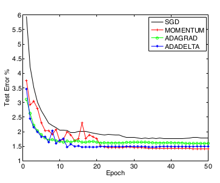
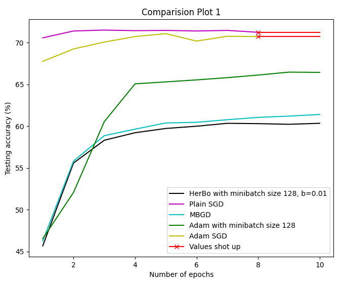
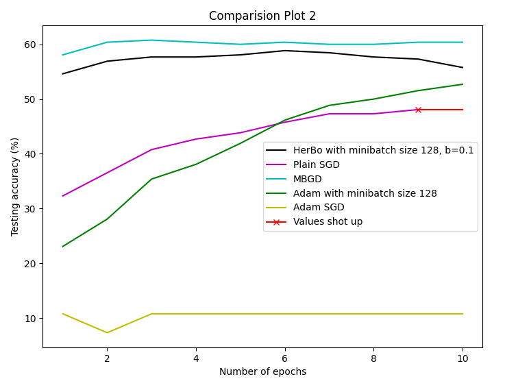
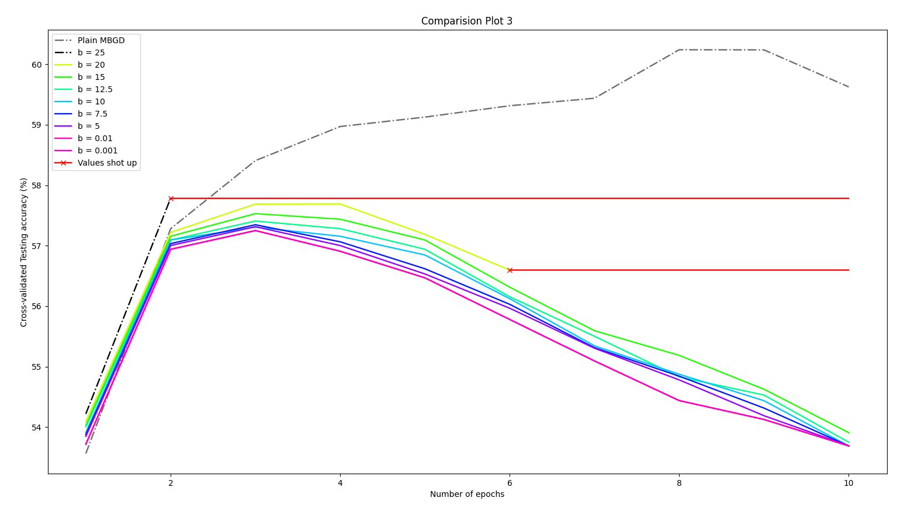

Machine learning and Artificial Intelligence have become so popular that one can see its applications in almost every field one can think of. How to make these algorithms much more efficient and effective are crucial questions we would like to address. To give an idea of how complex even the simplest of problems can be, let us look at some numbers. The number of parameters in simple and good neural networks tackling the MNIST Database using a Convolutional Neural Network (CNN) are in millions. Even typical Neural Networks (NNs) tackling even simpler problems would have its number of parameters in orders of tens of thousands [5]. The gradient descent explanations one usually encounters online come with a parabola (Fig.1) or a contour representing the loss function with respect to 1 and 2 parameters respectively. We see that as the complexity of the problem increases, the number of calculations required (finding gradients) at each point also increases.
Fig.1 - Gradient descent for different learning rates (Source: Built In)
Instead of looking at how the curve is at each point blind, there are a variety of gradient descent and optimization techniques we can use to tackle such problems. Keep in mind that when we use the term optimization, we do not refer to optimizations like parameter initialisation (like weights in NNs and CNNs), but we refer to optimization methods in gradient descent algorithms. Learning rate is an important hyper-parameter for every algorithm and setting it to a value too low would mean it would take too long for the algorithm to converge to a solution. Setting it to a value too high would result in fluctuations and diverging solutions. Optimization methods are used to find a good solution, fast, along with a good probability that it will converge. With optimization, data is used more effectively and these algorithms help us save a significant amount of time and computational resources. The animation shown below shows the difference between some popular optimization methods and how fast (and accurately) they converge to the minima compared to the others.
As explained in [9], besides the learning rate, how to avoid the objective function being trapped in infinite numbers of the local minimum is a common challenge. The slope of a saddle point is positive in one direction and negative in another direction, and gradient values in all directions are zero. It is an important problem to escape from these points and algorithms like Nesterov Accelerated Gradient Descent (NAG) come into the picture. Although higher-order methods are more suited, we will see why they aren't used very often when we introduce them later on.
Now that we have seen why studies in optimization are important, let us get ourselves introduced to current optimization methods before stating our problem.
Current Optimization Methods
Popular optimization methods can be divided into three categories: first-order optimization methods (represented by the widely used stochastic gradient methods); high-order optimization methods; and heuristic derivative-free optimization methods.
Just like we discussed in class, there can be situations where we reach a saddle point in the loss function, there are high-order optimization algorithms to overcome this problem which involves complex calculations (like the inverse of large matrices). As explained in [9], compared to first-order optimization methods, high-order methods converge at a faster speed in which the curvature information makes the search direction more effective. High-order optimizations attract widespread attention but also face more challenges. Although the convergence of the algorithm can be guaranteed, the computational process is costly and thus rarely used for solving large machine learning problems. For example, computing and storing the full Hessian matrix takes O(n2) memory, which is infeasible for high-dimensional functions such as the loss functions of neural networks [8]. We will not get into high-order optimization, but what we seek to study is the effect of adding additional higher "moment" terms to the heavy-ball optimization. We use "higher moment terms" to avoid confusion with the already-in-use "high-order methods". We will also be diverting from the main problem if one gets into derivative-free optimization methods also. So, let us look into first-order optimization methods and find out where our project comes into the picture among these methods.
First-order methods involve methods like Gradient Descent (Normal, stochastic, batch/mini-batch), Nesterov Accelerated Gradient Descent, AdaGrad, and so on. Gradient Descent is explained in more detail in the Additional Resources section. More detailed review of first-order (and high-order) methods can be read at [1, 7, 10]. In NAG, the update is given by:
where x is the parameter, k is the iteration number, L is the loss function, a is the learning rate and b is another hyperparameter.
The method we look to focus on is the Polyak's Heavy-Ball Optimization Method, whose parameter updates is given by:
If observed closely, one can see that NAG and HBO are not governed by the same equations, yet some sources call either of the algorithms as "Momentum" optimization. To avoid confusion, we will refer to them with their original names.
Problem Statement and Objectives
We see that there is literature that delves into high-order methods which involve taking higher-order derivatives of the loss function to get more information of the curvature. But when one looks at the parameter-update equation of the HBO, one can realise that there could have been additional higher-order terms of the parameter differences (momentum terms). For instance, we had , but why not , and terms with 5th power and so on (Why are we not considering even powers?). So this thought got us searching for the algorithms that do this, but according to [9], up until 2019, there has been no literature on the same. So our project would involve looking into such higher moment terms and look at how they affect the training process in terms of rate of convergence, probability of convergence, etc.
We look forward to studying the effects of including a set of terms to the HBO:
where n is an odd integer. If time permits, we would also want to look at the addition of terms like:
where n is an odd integer. One also has to keep in mind that studying the effect of the addition of the above terms would involve deeper ablative tests to truly show that the positive/negative results obtained are due to addition of these terms only. For example, intuitively one can realise that learning rates that work for HBO might not necessarily work for the addition of 3rd-moment terms, because every iteration would go faster when going down the slope, and towards the minima can off-shoot and cause fluctuations.
Initially, our project would also involve going through literature to select out problems and architectures used in previous publications in the area. With respect to experimentation, we look forward to making this project an exhaustive one by focussing on one or more benchmark problems (like MNIST, to compare with existing optimization methods), include ablative tests on hyper-parameters (like learning rate, a, b) and parameters, and thus compare how our proposed change fares with existing methods. In the end, we also hope to get an animation like Fig.2 to provide for a more visual end result of our project.
Scope, Feasibility and Work Plan
We will take up the benchmark problems people use to fare their optimization methods against others, but keeping in mind the computational resources we have access to, we might have to restrict our extent of testing to selected problems. Other than this, all tools needed to run the experiments are present and accessible (all that is needed is a computer with Python libraries and Google Colab access). We have not yet gone into the specifics, but we hope they have not conducted their experiments for too many iterations and large architectures/models. This stems from the fact that we only have access to a basic computer (8-core i7 8th Gen 2.6GHz, 8GB RAM and 1TB HDD) or a Colab alternative (2-core Xeon 2.2GHz, 13GB RAM, ~107GB HDD and a max run-time of 12hrs only).
Empirical tests will be done to compare HerBO with other methods. For now, we will look into performance based on terms of both the number of iterations and wall-clock time, but if any other means of comparison comes up, we can perform the same if time permits. As done in [6], we look to building NNs and study performance in the digit recognition problem (Using MNIST data). The same tests using CNNs would also be done. In our experiments, model choices for experiments will be made that are consistent with previous publications in the area. The architecture for these models are:
A Neural network model with two fully connected hidden layers with 1000 hidden units each and ReLU activation are used for this experiment with mini-batches of size 128.
Our CNN architecture has three alternating stages of 5x5 convolution filters and 3x3 max pooling with a stride of 2 that are followed by a fully connected layer of 1000 rectified linear hidden units (ReLU’s). The input images are pre-processed by whitening, and dropout noise is applied to the input layer and fully connected layer. The minibatch size is also set to 128 similar to previous experiments.
We currently have plans for executing this project in 3 phases. The first phase involves looking at as much as literature we can to gather information regarding what problems they looked at and what architecture they built to solve those problems to test how good their method was. The second phase involves coding the architecture (which mostly would be NNs and CNNs), and most of this is already done (courtesy of collaborative work with Dr Subhankar Mishra, Sahel M Iqbal and Chinmay Routray). This phase would also involve bringing in those additional terms and conduct the required experiments. The third phase would involve conducting some ablative tests. The details of the third phase would be more clear after we are done with literature after shortlisting the list of experiments that are feasible for us, given the time and resources.
Fig.3 - Work Plan
Is the Problem Worth Looking At?
We have limited knowledge of what the outcome of this project would come out to be, but we are hopeful for some positive results, if not, then we would know one direction where we need not search. That said, we need to take a step back and ask ourselves why we are doing this? Why do we need to look for different methods? Yes, these methods will help make our programs faster, saving hours or even days and significant computational resources. But that is only secondary; what we are seeking to gain from this project is to understand the much deeper questions like how do these algorithms work? Why some work and why some don't? We hope to work with numerous algorithms, test them, play with them and thus at the end of it, share our knowledge and experience with rest of the class.
Adam Optimisation
As explained in [6], Adaptive moment optimisation is an algorithm for first order gradient-based optimisation of stochastic objective functions based on the adaptive estimates of lower-order moments. The Adam optimisation method is very easy to implement, computationally efficient, having little memory requirements, invariant to diagonal rescaling and is well suited for problems that are large in terms of data and parameters. This method has the combined advantages of AdaGrad optimisation, which works well with sparse gradients, and RMSProp method, which works well in on-line and non-stationary settings. In Adam optimisation, the magnitudes of parameter updates are invariant to scaling of the gradient, its stepsizes are approximately bounded by the stepsize hyperparameter, it does not require a stationary object, it works with sparse gradients, and it naturally performs a form of step size annealing. The algorithm is as follows:
g2t indicates the element wise square gtgt.
Good default settings for the tested machine learning problems are α = 0.001, β1 = 0.9, β2 = 0.999 and ϵ = 10-8. All operations on vectors are element-wise.
To empirically evaluate Adam optimisation method, the authors implemented Logistic Regression, NNs and CNNs in some problems. We will only be discussing the last two here, as we plan to implement only CNNs and NNs models.
Multilayer NN
A neural network model with two fully connected hidden layers with 1000 hidden units each and ReLU activation with minibatch size of 128 was used to study different optimizers using the standard deterministic cross-entropy objective function with L2 weight decay on the parameters to prevent over-fitting. Stochastic regularization methods, such as dropout is an effective way to prevent overfitting and is often implemented in practice due to their simplicity. The training of multilayer neural networks (which use dropout stochastic regularization) on MNIST images is shown below.
The weight sharing in CNNs results in vastly different gradients in different layers. The CNN architecture has three alternating stages of 5x5 convolution filters and 3x3 max pooling with stride of 2 that is followed by a fully connected layer of 1000 rectified linear hidden units (ReLU’s). The input image is pre-processed by whitening, and dropout noise is applied to the input layer and fully connected layer. The minibatch size is set to 128; we see Adam and SGD eventually converge considerably faster than Adagrad for CNNs despite Adam and Adagrad making rapid progress lowering the cost in the initial stage of the training as shown in the figure below.
As explained in [7], AdaGrad is an algorithm for gradient-based optimization that adapts the learning rate to the parameters, that is, performing smaller updates (i.e. low learning rates) for parameters associated with frequently occurring features and larger updates (i.e. high learning rates) for parameters associated with less frequent features.
Previously, we used to perform a single update for all parameters θ at once as every parameter θi used the same learning rate η. But Adagrad uses a different learning rate for every parameter θi at every time step t. For brevity, we use gt to denote the gradient at time step t. gt,i is then the partial derivative of the objective function with respect to the parameter θi at time step t:
If we look at an SGD update for every parameter θi at each time step t, it becomes . The Adagrad algorithm modifies the general learning rate η at each time step t for every parameter θi based on the past gradients that were computed for θi by:
Here, is a diagonal matrix where each diagonal element i,i is the sum of the squares of the gradients with respect to θi up to time step t, while ϵ is a smoothing term that avoids division by zero (usually on the order of 1e−8).
The authors performed experiments with several real world data sets with different characteristics: the ImageNet image database, the RCV1 text classification data set, the MNIST multiclass digit recognition problem, and the census income data set from the UCI repository.
They approached the ImageNet problem using a discriminative kernel-based model to rank images (see this for more details); the text classification problem using a binary classifier; the MNIST problem using a linear classifier built on top of a Radial-basis-function kernel; and the census income problem had no model specified.
Although the list of benchmark problems used are extensive, we will not use the models used in this paper owing to their complexity, we are not confident to be able replicate these models in the limited time frame.
AdaDelta Optimisation
As explained in [11], AdaDelta optimisation improves upon two main drawbacks of the AdaGrad method, namely the need for a manually selected global learning rate and continual decay of learning rates during training. In the AdaGrad optimisation method, the denominator accumulates the squared gradients from each iteration starting at the beginning of training, this accumulated sum continues to grow throughout training, effectively reducing the learning rate on each dimension. After many iterations, this learning rate will become infinitesimally small, nearing zero. By using AdaDelta method this problem can be rectified.
Here, instead of accumulating the sum of squared gradients over the total runtime, the duration of past gradients that are accumulated is restricted to a size w instead of t where t is the current iteration like used in AdaGrad. This will cause the windowed accumulation of the denominator of AdaGrad to not lead to infinity and instead become a local estimate using later gradients. Since the storing w previous squared gradients is inefficient, this method implements the accumulation as an exponentially decaying average of squared gradients. Assume at time t this running average is E[g2]t then it can be computed as:
Here ρ is a decay constant similar to that used in the momentum method. Since the square root of this quantity is required in the parameter updates, this effectively becomes the RMS value of previous squared gradients up to time t:
where a constant ϵ is added to better condition the denominator. The resulting parameter update is then:
The algorithm is as follow:
The optimization method is compared against SGD, Momentum, AdaGrad, and AdaDelta in a supervised fashion to minimize the cross entropy objective between the network output and ground truth labels. A neural network is trained on the MNIST handwritten digit classification task. It is trained with tanh nonlinearities and 500 hidden units in the first layer followed by 300 hidden units in the second layer, with the final softmax output layer on top and mini-batches of 100 images per batch for 6 epochs through the training set. Setting the hyperparameters to ϵ = 1e−6 and ρ = 0.95 a test set error of 2.00% can be achieved [11].
The table above shows MNIST test error rates after 6 epochs of training for various hyperparameter settings using SGD, Momentum,and AdaGrad whereas the table below shows MNIST test error rate after 6 epochs for various hyperparameter settings using AdaDelta [11].
To better understand various methods of convergence, the neural network is trained with 500 hidden units in the first layer, 300 hidden units in the second layer and rectified linear activation functions in both layers for 50 epochs. It is seen that rectified linear units perform more efficiently in practice than tanh, their non-saturating nature further tests each of the methods at coping with large variations of activations and gradients.

Fig.6 - Comparison of learning rate methods on MNIST digit classification for 50 epochs (Source: [11])
In the above figure SGD, Momentum, AdaGrad, and AdaDelta are compared in optimizing the test set errors. The SGD method has worst performance, but by adding the momentum term to it significantly improves performance. AdaGrad performs well for the first 10 epochs of training but it slows down considerably due to the accumulation of the denominator which continually increases. AdaDelta matches the fast initial convergence of AdaGrad while continuing to reduce the test error, converging near the best performance which occurs with Momentum.
What Benchmark Problems Will We Tackle and How?
Since we removed the experiments conducted in AdaGrad, we now only have Adam and AdaDelta to choose from. Both optimisers tested their performance on the MNIST Database. Adam used a NN and a CNN, while AdaDelta used only a NN.
Our goal is to code a Convolutional Neural network used in the Adam paper and then code the Neural Network in one of these configurations and tackle the MNIST problem for both.
If we look at the NN architecture used in AdaDelta, the number of epochs they trained with is low, and they used a mini-batch size of 100; whereas in practice, it is advised to tune mini-batch size to an aspect of the computational architecture on which the implementation is being executed. For example, a power of 2 that fits the memory requirements of the GPU or CPU hardware like 32, 64, 128, 256, and so on.
Since both NN architectures were tested and used, we are left to choose between the two of them randomly, but owing to the above stated flaws in AdaDelta, we have decided to go ahead with the NN architecture used in Adam and look forward to building the same.
Adopted Methodology, Results and Inferences
Architecture, Computer Specs and Progress Outline
Please note that the program we have written is in its initial stages, and yet to be optimised to run faster and take up lesser computations compared to the established libraries like Tensorflow and PyTorch. After giving thought into how much time it would take to test/train for a given architecture, we considered having a simpler version of the CNN architecture used in the Adam paper for the MNIST problem.
For all our tests we used 1 convolutional layer, 1 max-pooling layer and 1 fully-connected layer. The convolutional layer had 10 filters with a receptive field of 5 units and convolving at a stride length of 1 unit, pooling layer stride length of 2 units and 10 nodes in the fully connected layer. We used a learning rate of 0.05. We used the ReLU function as our activation function and a cross-entropy loss (Softmax Classifier) as our loss function.
We used Google Colab to run all our codes and the specs of this computer is a 2-core Xeon 2.2GHz processor, a 13GB RAM and approximately a 107GB HDD.
The first 2 weeks involved setting up all algorithms and running once for a sample dataset to see if everything is working. This training and testing dataset was set to 2560 images, and the training was done for 5 epochs. From the results, we realised that we needed to set up the number of epochs to 10 to get a better idea of convergence to a minima. The results of the same are depicted in Fig.8. Since we are using a mini-batch size of 128 in some of the algorithms, we set the training size to a multiple of 128 for all runs. The "MINST_via_CNN_old_train_test.ipynb" file in our GitHub repo contains the source code and the results for multiple algorithms, namely Stochastic Gradient Descent (SGD), Mini-Batch Gradient Descent (MBGD), HerBo (for MBGD) and Adam (for MBGD and SGD) for the MNIST problem.
The results also have the testing accuracy after every epoch. We see that the rate of convergence for Adam MBGD > MBGD > HerBo MBGD > Plain SGD. Please NOTE that there is an error that comes in the SGD part after the 8th epoch. This occurred due to some parameter shooting to a large number, so for SGD, we have results until 8 epochs only.

Fig.8 - Comparision of HerBo with other existing algorithms (We used a training and testing size of 2560 images)
Class II of Experiments, Subsequent Results
Each run (10 epochs) of the previous class of experiments took about 2-3 hours to complete which means that every curve corresponding to an algorithm in Fig.8 took 2-3 hours to produce. We see that it is not computationally feasible for us to train with all 60,000 MNIST images, 2560 images are the limit of what we can handle, but we still had to select a training dataset that has a good representation of all classes and not account to any under/over-generalisation. To solve this, we calculated the percentage of examples in each class in the original MNIST training set and maintained the same values in our smaller training dataset. Eg: 11.24% of the original MNIST dataset were 1s. So 11.24% of 2560 images of our training set are also 1s. For the testing set, we selected 260 images from the MNIST testing dataset. We will refer to this training (+ testing) dataset as the inclusive dataset. And we ran this for all the algorithms we are interested in. The source codes and results of them are in the file named "MINST_via_CNN_shrinked_train.ipynb" in our GitHub repo.
The plot of the accuracy scores is as shown in Fig.9.
One could ask why not 10% from each class in our small training dataset? This is a valid argument but all papers are based on the official 60,000 training images and the original dataset does not have an equal number of images for each class. Since the benchmark training dataset is the same, we thought it would make more sense to keep the same distribution and not an equalised one.

Fig.9 - Comparision of HerBo with other existing algorithms (For the inclusive training and testing dataset)
Note that each run (10 epochs) took about 2-3 hours just like the previous step. We see that HerBo performs similar to MBGD, and is better than the other algorithms. We also need to keep in mind the drop in accuracy in the later epochs. We will get back to this after discussing our next result.
Class III of Experiments, Subsequent Results
After a discussion with Dr. Subhankar, we decided to drop the ablative tests that were to be performed in week 5 and decided to go ahead with running better tests by performing a 5-fold cross-validation on a dataset of size 3200 images. This dataset was made similar to how we made the inclusive dataset. Each fold had the training process run for 10 epochs.
We conducted 5-fold cross-validation experiments for different values of the hyperparameter 'b' in the HerBo algorithm for moment 3 terms (i.e ). We also ran the cross-validation algorithm on MBGD, this combined with Fig.9 will give us a good idea of how HerBo works compared to other algorithms. The training dataset size was 2560 images, the testing dataset size was 640 images and the mini-batch size was set to 128. Results and codes for these configurations are in the "HerBo Outputs" folder in our GitHub repo.
Please note that one run of a 5-fold cross-validation (training of 10 epochs for each fold), took about 12-13 hours to finish! There were also times when it got disconnected and had to start anew or continue over from the paused epoch. These are the cases where we had to separate the python file into multiple parts. Choosing the values for hyperparameter b involved in the addition of higher moment terms to explicitly depict the influence the higher moment terms in HerBO was also laborious. By 20th November we culminated the results we had obtained until then, and the plots obtained for different b values were all exactly the same. After going into every line of the code, we found a mistake that is trivial, but yet non-trivial at the same time. We had to go to the level of how array copies are made in Python (involving shallow and deep copies) to correct the mistake we made. After making the required corrections, we plotted accuracy scores for values of b ranging from values 0.001 to 25 to understand their influence on accuracy in Fig.10.

Fig.10 - Comparision of accuracy for different b-values in HerBo
Inferences and Final Remarks
All the results that we have obtained are for experiments conducted on the same grounds. The weight initialisations were the same (using random seed), the train/test data were the same, etc; hence the different models in any one of the 3 plots can be compared with each other on the same grounds. As we evolved through experiments, we can see that efforts were put into making it a wholesome and extensive set of experiments. Fig.9 essentially compares HerBo with other pre-existing/established algorithms.
We see that our model is similar to MBGD but accuracy starts to drop towards the later epochs. But HerBo still does much better in the initial epochs compared to other algorithms. While saying this, we also need to keep in mind that although the data selected might be good, running it through a cross-validation process will make it more concrete. We were not able to do cross-validation for all algorithms due to time constraints, but we were able to do it for MBGD and different b values of HerBo. Since we know how HerBo and MBGD compare with Adam, SGD and Adam + SGD, running for MBGD alone and comparing it to different b values gives us a rough idea of how our model would perform compared to other algorithms.
This way we can save on the time we need to run cross-validation on other algorithms. As we see in Fig.10, MBGD crushed our hopes to make our algorithm effective because we see that accuracy of our algorithm drops after the first few epochs for all values of b we have run tests for. But an important point to observe is that after the first epoch, our algorithm has higher accuracy than MBGD for high b-values. So the only practical use we see that our algorithm has is when one needs a boost of a small percent in the accuracy for some epoch. One can use our algorithm (for one epoch) for a headstart in optimising and then switch to another algorithm for a stable convergence to the minima.
In the given timeframe, we were not able to run experiments for different powers and higher moments or experiments on Neural Networks. There might be other areas of experiments we may have looked over, but for the values and moment orders we covered, our model did not work like how we expected it would. As explained, it is limited to a one-off use. There are possibilities that this algorithm could be put to use in some other settings or some sub-class of problems and we hope someone can carry this line of study in the future. Unlike Adam, SGD, MBGD, which work on almost all classes of problems and settings, HerBo did not. But we did learn a lot of things through this project and we thank Dr. Subhankar Mishra for giving us the opportunity and time to do so. We also thank Sahel Iqbal and Chinmay Routray for allowing us to use parts of the code they contributed to. We would like to thank the CS460 class of 2020 for their time to hear our story of this journey.
Primer
We must have a basic understanding of loss functions, basic optimization methods (like gradient descent) before jumping into what our project is about and how it works.
Score and Loss Functions
In machine learning, scoring is the process of generating values based on a trained model, given some new input data. A function which helps us to map the raw data to class score is defined as Score function. When we use a model developed with training data to predict the output values for new data, we generally refer to it as 'scoring new data', rather than predicting.
The loss function is used to represent the agreements or disagreements between the predicted output scores and the ground truth labels, i.e. if the predicted scores deviate too much from the truth labels then the loss function will output a very large number. Or as explained in [2] in simpler terms, the loss function quantifies our unhappiness with predictions on the training set.
The value of parameters W that produced predictions for examples consistent with their ground truth labels will lead to minimum loss L; this process of finding the most suitable set of parameters W that will provide us with the minimum loss is called Optimization.
Optimization
As explained in [2], we can employ the three elementary strategies given below as simple optimization:
Random search
As the name suggests, we simply try out several random parameters W and compare the best one with each other and iteratively refine them over time to get the lowest loss. An analogy would be a drunk man randomly wandering around in a hilly terrain trying to reach the bottom. This method is both time-consuming and highly inefficient.
Random local search
We start with any random W and generate random displacements dW to it and update only if the loss W + dW is lower than W. The analogy we can use would be a hiker trying to reach the bottom of the hilly terrain by proceeding to take a step in any direction as long as it leads down.
Along the Gradient
Here, we compute the best direction in which we should change our W weight vector such that it is mathematically guaranteed to be the direction of steepest descent. We compute the slope (gradient), which is the first-order derivative of the function at the current point, and move in the opposite direction of the slope by the computed amount. For our analogy, the hiker will traverse the direction which he feels is the steepest descent.
Note: The gradient only tells us the direction which has the steepest decrease of the loss function, but it does not tell us how far along the direction the lowest point is located. Choosing the step size, also known as the learning rate, is an important hyper-parameter setting in training a neural network. Choosing a small step size will lead to consistent but slow progress, whereas choosing a large step size may cause us to overstep as depicted in the illustration given below.
Fig.11 - Visualizing the effect of step size. We start at some particular spot W and evaluate the negative of the gradient (the white arrow) which tells us the direction of the steepest decrease in the loss function (Source: Optimization, CS231n)
Types of Gradient Descent Algorithms
We will be looking deeper into three methods of gradient descent optimization algorithm used such as Mini-batch gradient descent and its two extreme cases, the Stochastic Gradient Descent, and Batch Gradient Descent. With what we found from [4], they can be summarized as follows:
Mini-batch Gradient Descent
In cases where the training data available is exceptionally large, we divide the training data into batches and compute the gradient over them instead of the whole. This method is computationally efficient and easily fits in memory. It also produces a more stable gradient descent convergence. But this stable error gradient may lead it into a local minimum instead of the global minima, though the oscillations will help get out of them; also the segmented training set size shouldn't be too large to process in memory.
Stochastic Gradient Descent (SGD)
SGD algorithm updates the parameters after evaluation of the loss function for each example instead of a mini-batch as given in the earlier method. If the training set contains n examples then the parameters are updated n times, i.e. one time after every single example is passed through. Due to the frequent updates, the steps taken towards the minima of the loss function will have oscillations. This helps get the loss function out of the local minima; though the same will also cause it to be noisy and can point the gradient descent in other directions and hence cause it to take longer to converge to global minima.
Batch Gradient Descent (BGD)
In BGD the parameters are updated once after all the training examples have been evaluated. In this method, there are fewer oscillations and noisy steps are taken towards global minima since it updates parameters by computing the average of all training examples. It produces a more stable gradient descent convergence than the other two methods and is computationally much more efficient. But its lack of noisy steps can make it harder to get out of local minima.
CS231n Convolutional Neural Networks for Visual Recognition. CS231n. (2020). Retrieved 3 October 2020, from https://cs231n.github.io/.
Duchi, J., Hazan, E. and Singer, Y., 2011. Adaptive Subgradient Methods for Online Learning and Stochastic Optimization. Journal of Machine Learning Research, 12, pp.2121-2159.
P. Kingma, D. and Ba, J., 2015. Adam: A Method for Stochastic Optimization. In: 3rd International Conference for Learning Representations. San Diego.
Ruder, S., 2020. An Overview Of Gradient Descent Optimization Algorithms. [online] Sebastian Ruder. Available at: https://ruder.io/optimizing-gradient-descent/ [Accessed 3 October 2020].
Sun, S., Cao, Z., Zhu, H. and Zhao, J., 2020. A Survey of Optimization Methods From a Machine Learning Perspective. IEEE Transactions on Cybernetics, 50(8), pp.3668-3681. https://doi.org/10.1109/tcyb.2019.2950779.